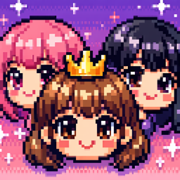

직접 뽑은 멤버로 그룹을 만들고, 컴백을 기획해 차트 1위에 도전합니다. 활동 중 내린 선택들은 7년 차 재계약과 10년 뒤의 결말로 돌아옵니다.
광고 없음추가 결제 없음오프라인 플레이20가지 엔딩
App Store 출시 준비 중 · ₩990
연습생을 가르치고 그룹을 결성합니다. 콘셉트와 프로듀서를 고르고, 뮤직비디오에 얼마를 쓸지 정하면 컴백이 시작됩니다.
돈을 많이 쓴다고 1위가 되지는 않습니다. 프로듀서마다 잘하는 콘셉트가 따로 있고, 기대에 못 미치면 "그 돈 쓰고 그 순위?"라는 기사까지 나옵니다.
직접 뽑은 멤버들이 내가 기획한 곡으로 춤을 춥니다. 콘셉트가 바뀌면 세트와 안무도 달라집니다.
차트 순위가 공개되는 밤에는 아이폰을 응원봉처럼 흔들어 보세요. 세게 흔들수록 환호가 커집니다. 포인트 안무가 챌린지로 터지면 조회수와 댓글이 눈앞에서 쌓입니다.
음악방송 1위 후보에 오른 주, 라이벌이 같은 날 컴백을 발표합니다. 생방송 도중 멤버가 넘어지기도 합니다.
그때마다 직접 대응 방법을 선택하고, 주사위나 타이밍 맞추기 같은 짧은 승부로 결과를 결정합니다.
처음 2년은 살아남는 게 먼저입니다. 투자자와의 약속을 지키지 못하면 회사 지분을 내줘야 합니다.
멤버마다 사연이 있습니다. 가족의 생계를 책임지는 연습생도 있고, 다른 회사에서 탈락하고 온 연습생도 있습니다.
면담에서 들은 이야기와 위기에서 내린 선택들이 충성도로 쌓이고, 그 결과는 7년 차 재계약 자리에서 돌아옵니다.
예능 활동에만 집중한 멤버는 방송인의 길을 선택하고, 소외된 외국인 멤버는 고국으로 돌아갈 수도 있습니다.
팬덤이 커지면 소극장에서 돔으로, 도쿄에서 뉴욕까지 무대가 넓어집니다. 연말 시상식에서는 직접 수상자 봉투를 엽니다.
전설적인 기획사로 남을 수도 있고, 원히트원더나 폐업 기자회견으로 끝날 수도 있습니다.
20가지 결말이 컬렉션에 남아 다음 회차의 유산이 됩니다.